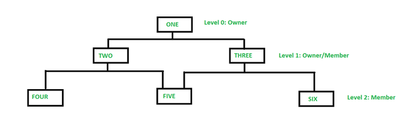
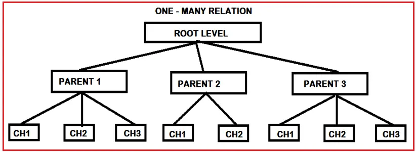
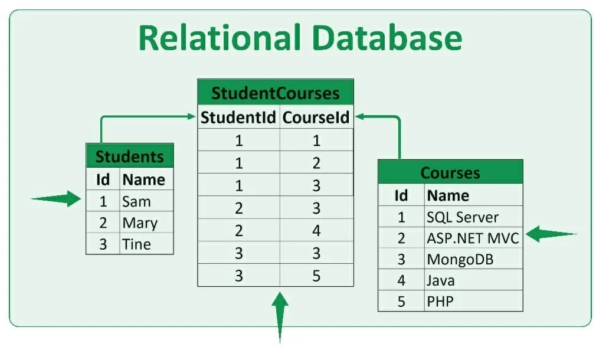
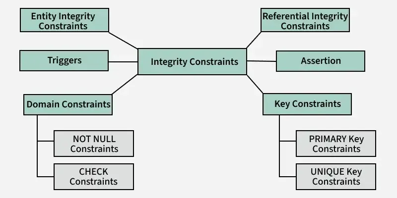

The Network Model in a Database Management System (DBMS) is a data model that allows the representation of many-to-many relationships in a more flexible and complex structure compared to the Hierarchical Model.
It uses a graph structure consisting of nodes (entities) and edges (relationships) to organize data, enabling more efficient and direct access paths.
What is Network Model?
This model was formalized by the Database Task group in the 1960s. This model is the generalization of the hierarchical model. This model can consist of multiple parent segments and these segments are grouped as levels but there exists a logical association between the segments belonging to any level. Mostly, there exists a many-to-many logical association between any of the two segments. We called graphs the logical associations between the segments. Therefore, this model replaces the hierarchical tree with a graph-like structure, and with that, there can more general connections among different nodes. It can have M: N relations i.e, many-to-many which allows a record to have more than one parent segment. Here, a relationship is called a set, and each set is made up of at least 2 types of record which are given below:
1.An owner record that is the same as of parent in the hierarchical model.
2.A member record that is the same as of child in the hierarchical model.
Structure of a Network Model

Advantages of Network Model
This model is very simple and easy to design like the hierarchical data model.
In this model, we can access the data easily, and also there is a chance that the application can access the owner and the member records within a set.
Like a hierarchical model, this model also does not have any database standard.
This model allows to represent multi parent relationships.
Structure of a Network Model
Advantages of Network Model
This model is very simple and easy to design like the hierarchical data model.
We can access the data easily, and also there is a chance that the application can access the owner and the member records within a set.
Like a hierarchical model, this model also does not have any database standard.
This model allows to represent multi parent relationships.
Disadvantages of Network Model
The schema or the structure of this database is very complex in nature as all the records are maintained by the use of pointers.
This model does not have any scope of automated query optimization.
The design or the structure of this model is not user-friendly.
This model fails in achieving structural independence even though the network database model is capable of achieving data independence.
Hierarchical Model
Database models are critical frameworks in database management systems, dictating how data is structured, stored, and accessed.
Among these, the hierarchical model stands out for its tree-like structure where data is organized in parent-child relationships, resembling a family tree.
This model, significant in the early development of database systems, enables efficient data retrieval through predefined pathways.
Despite its age, the hierarchical model is still pertinent in modern applications that demand rigid hierarchical structures, such as XML data processing and organizational charts.
Its capability to manage complex hierarchies effectively makes it invaluable for specific scenarios where performance and data order are prioritized.

Advantages of Hierarchical Model
1.The tree-like structure of the hierarchical model is intuitive and easy to understand, which simplifies the design and navigation of databases. This structure clearly defines parent-child relationships, making the path to retrieve data straightforward.
2.Due to its rigid structure, the hierarchical model inherently maintains data integrity. Each child record has only one parent, which helps prevent redundancy and preserves the consistency of data across the database.
3.The model allows for fast and efficient retrieval of data. Since relationships are predefined, navigating through the database to find a specific record is quicker compared to more complex models where paths are not as clearly defined.
4.Hierarchical databases can provide enhanced security. Access to data can be controlled by restricting users to certain segments of the tree, which makes it easier to implement security policies based on data hierarchy.
Disadvantages of Hierarchical Model
1.The biggest limitation of the hierarchical model is its structural rigidity. Once the database is designed, making changes to its structure, such as adding or modifying the relationships between records, can be complex and labor-intensive.
2.In cases where a child has more than one parent, the hierarchical model can lead to data duplication because each child-parent relationship needs to be stored separately. This redundancy can consume additional storage and complicate data management.
Relational Model in DBMS
The Relational Model represents data and their relationships through a collection of tables.
Each table also known as a relation consists of rows and columns. Every column has a unique name and corresponds to a specific attribute, while each row contains a set of related data values representing a real-world entity or relationship.
This model is part of the record-based models which structure data in fixed-format records each belonging to a particular type with a defined set of attributes.
E.F. Codd introduced the Relational Model to organize data as relations or tables.
After creating the conceptual design of a database using an ER diagram, this design must be transformed into a relational model which can then be implemented using relational database systems like Oracle SQL or MySQL.

Advantages of Relational Model
1.Relational Model is simple and easy to use in comparison to other languages.
2.Relational Model is more flexible than any other relational model present.
3.Relational Model is more secure than any other relational model.
4.Data is more accurate in the relational data model.
5.The integrity of the data is maintained in the relational model.
6.It is better to perform operations in the relational model.
Disadvantages of Relational Model
1.Relational Database Model is not very good for large databases.
2.Sometimes, it becomes difficult to find the relation between tables.
3.Because of the complex structure, the response time for queries is high.
RDBMS TERMINOLOGY
Formal Name
Meaning
Relation
table
Tuple
row/record
Attribute
Column,field
Domain
A domain is a set of values from which the actual value is choosen
cardinality
Number of rows
Degree
Number of columns
primary key
unique identifer
Foreign key
Identifier used to refer other table
CODD'S RULES
Codd’s 12 rules is a set of rules that a database management system (DBMS) must satisfy if it’s to be considered relational (i.e. a relational DBMS).
The rules were proposed by Edgar F. Codd, who is considered a pioneer of the relational database model.
Codd’s 12 rules is actually a set of thirteen rules, numbered from zero to twelve. The twelve rules are based on a single foundation rule — Rule Zero.
Codd’s 12 rules are as follows.
Rule 0: The foundation rule:
For any system that is advertised as, or claimed to be, a relational data base management system, that system must be able to manage data bases entirely through its relational capabilities.
Rule 1: The information rule:
All information in a relational data base is represented explicitly at the logical level and in exactly one way — by values in tables.
Rule 2: The guaranteed access rule:
Each and every datum (atomic value) in a relational data base is guaranteed to be logically accessible by resorting to a combination of table name, primary key value and column name.
Rule 3: Systematic treatment of null values:
Null values (distinct from the empty character string or a string of blank characters and distinct from zero or any other number) are supported in fully relational DBMS for representing missing information and inapplicable information in a systematic way, independent of data type.
Rule 4: Dynamic online catalog based on the relational model:
The data base description is represented at the logical level in the same way as ordinary data, so that authorized users can apply the same relational language to its interrogation as they apply to the regular data.
Rule 5: The comprehensive data sublanguage rule:
A relational system may support several languages and various modes of terminal use (for example, the fill-in-the-blanks mode). However, there must be at least one language whose statements are expressible, per some well-defined syntax, as character strings and that is comprehensive in supporting all of the following items:
Data definition.
View definition.
Data manipulation (interactive and by program).
Integrity constraints.
Authorization.
Transaction boundaries (begin, commit and rollback).
Rule 6: The view updating rule:
All views that are theoretically updatable are also updatable by the system.
Rule 7: High-level insert, update, and delete:
The capability of handling a base relation or a derived relation as a single operand applies not only to the retrieval of data but also to the insertion, update and deletion of data.
Rule 8: Physical data independence:
Application programs and terminal activities remain logically unimpaired whenever any changes are made in either storage representations or access methods.
Rule 9: Logical data independence:
Application programs and terminal activities remain logically unimpaired when information-preserving changes of any kind that theoretically permit unimpairment are made to the base tables.
Rule 10: Integrity independence:
Integrity constraints specific to a particular relational data base must be definable in the relational data sublanguage and storable in the catalog, not in the application programs.
Rule 11: Distribution independence:
The end-user must not be able to see that the data is distributed over various locations. Users should always get the impression that the data is located at one site only.
Rule 12: The nonsubversion rule:
If a relational system has a low-level (single-record-at-a-time) language, that low level cannot be used to subvert or bypass the integrity rules and constraints expressed in the higher level relational language (multiple-records-at-a-time).
INTEGRITY CONSTRAINTS
Integrity constraints are a set of rules used in Database Management Systems (DBMS) to ensure that the data in a database is accurate, consistent and reliable. These rules helps in maintaining the quality of data by ensuring that the processes like adding, updating or deleting information do not harm the integrity of the database. In simple terms, they act as guidelines to protect the database and keep it error-free.
Integrity constraints also define how different parts of the database are connected and ensure that these relationships remain valid. They play an essential role in making sure the data is meaningful and follows the logical structure of the database.
In this article, we’ll look at the different types of integrity constraints and how they help in managing data effectively.
Types of Integrity Constraints

Domain Constraints
Domain constraints are a type of integrity constraint that ensure the values stored in a column (or attribute) of a database are valid and within a specific range or domain. In simple terms, they define what type of data is allowed in a column and restrict invalid data entry. The data type of domain include string, char, time, integer, date, currency etc.
The value of the attribute must be available in comparable domains
Types of Domain Constraints
1.NOT NULL:-
The NOT NULL constraint is used to enforce that a column in a table must always contain a value; it cannot contain a NULL value.
2.CHECK:-
The CHECK constraint in SQL is used to limit the range or set of values that can be inserted into a column. It ensures that the data entered into a column meets a certain condition or rule.
Entity Integrity Constraints
Entity integrity constraints state that primary key can never contain null value because primary key is used to determine individual rows in a relation uniquely, if primary key contains null value then we cannot identify those rows. A table can contain null value in it except primary key field.
Key Constraints
Key constraints ensure that certain columns or combinations of columns in a table uniquely identify each row. These rules are essential for maintaining data integrity and preventing duplicate or ambiguous records.
Referential integrity constraints
Referential integrity constraints are rules that ensure relationships between tables remain consistent. They enforce that a foreign key in one table must either match a value in the referenced primary key of another table or be NULL. This guarantees the logical connection between related tables in a relational database.